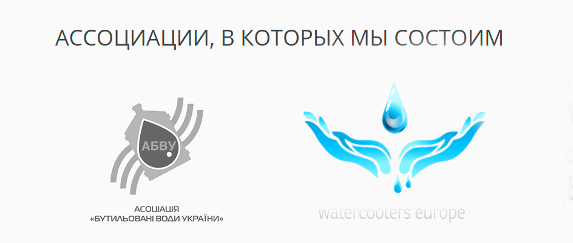

Методы очистки воды
Передовой способ очистки воды, позволяющий получить продукт, очищенный на молекулярном уровне — система обратный осмос и озоновая стерилизация. Это самые безопасные и качественные методы очистки воды.
Ключевым этапом в процессе очистки питьевой воды является прохождение воды через полупроницаемую мембрану, которая пропускает только молекулу воды H₂O размером 0,2 нм и задерживает химические соединения, бактерии, вирусы размером от 8 до 500 нм.
Таким образом, с одной стороны оказывается очищенная питьевая вода (структурированная вода H₂O), а с другой — концентрат загрязнений: растворенные соли, органические и неорганические вещества, микроорганизмы, тяжелые металлы, удобрения, коллоиды и другие.
Мы используем такие методы очистки воды
До того, как происходит розлив и дальнейшая доставка воды домой или в офис, наша очищенная вода проходит восемь этапов обработки разными методами очистки:
- Очистка воды механизированными фильтрами — используется для отделения от воды примесей песка, глины и др.
- Стерилизация воды (обеззараживание) — необходимый этап, позволяющий получить очищенную воду от вирусов, бактерий и спор, сероводорода.
- Мультимедийная очистка воды — этап прохождения воды по разнообразным фильтрам, заполненным разными слоями пропускного материала.
- Умягчение воды — процесс проводится за счет ионного обмена. Это обеспечивает нашей воде отсутствие накипи и осадка.
- Фильтрация воды активированным углем — позволяет сорбентам эффективно и без остатков сорбировать хлор и растворенные органические соединения.
- Ультрафиолет — дезинфицирует воду. Вода очищенная не меняет при этом физико-химический состав.
- Система обратного осмоса — процесс прохождения воды через полупроницаемую мембрану под высоким давлением в 23 атм. Размер отверстий мембраны равен диаметру молекулы воды H₂O — 0,0002 мкм. В результате вода очищена на молекулярном уровне.
- Озоновая стерилизация — чистая вода обогащается озоном. Озон создается электрическими разрядами и является неустойчивой формой кислорода, которая превращается в кислород через 30 мин. Цель использования — окончательная стерилизация и обеззараживание при розливе и герметизации воды в бутылях.

Наши методы очистки воды гарантируют, что вода "Кришталево-чиста питна вода":
- Структурированная, чистая питьевая вода высокого качества (по всем своим свойствам напоминающая талую воду).
- Очищенная и экологически чистая вода — фильтрация проводится без использования химических веществ, только при помощи естественных механизмов очистки.
- Рекомендуется для употребления деткам с рождения.
- Способствует быстрому поступлению в человеческий организм питательных веществ.
- Вода, очищенная через фильтр обратного осмоса, имеет свойства целебного значения. Способствует выведению из организма накопившихся шлаков, токсинов и других вредных микроорганизмов.

📦 Заказать воду
Оставьте короткую заявку — мы быстро свяжемся.